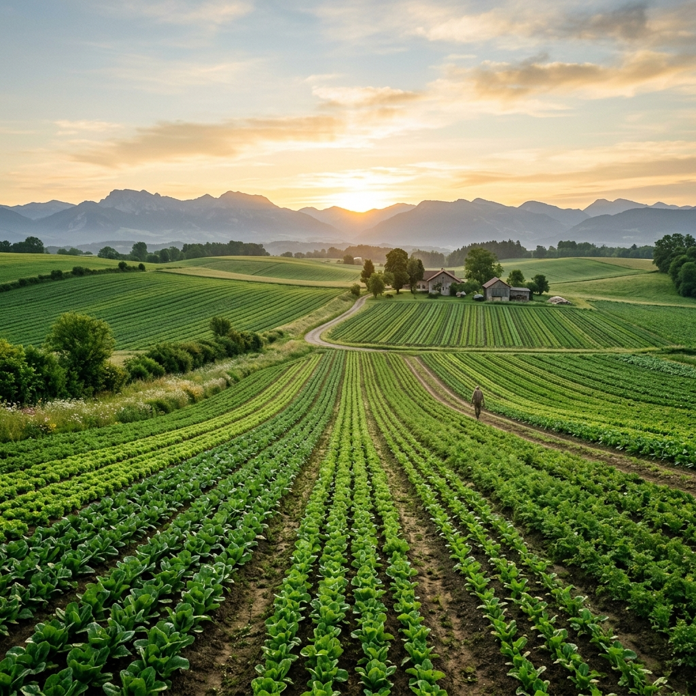

100% Direct Sourced
Empowering the Root
Fair Payouts at the Farm Gate
We source directly from farmers in East Andhra Pradesh, conducting quality checks and making fair payments right at the fields or at our procurement hubs, ensuring transparent payouts without middleman brokers.
0+
Farmers Supported
₹0Cr+
Disbursed Directly
0+
Acres Cultivated
0T+
Tons Supplied